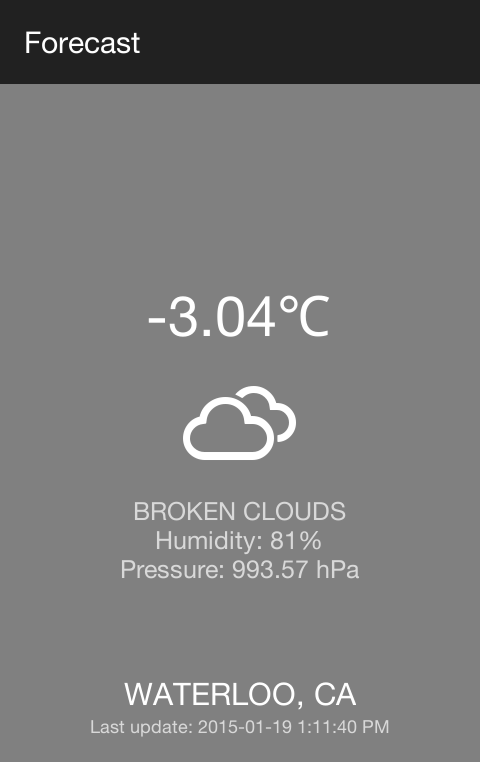
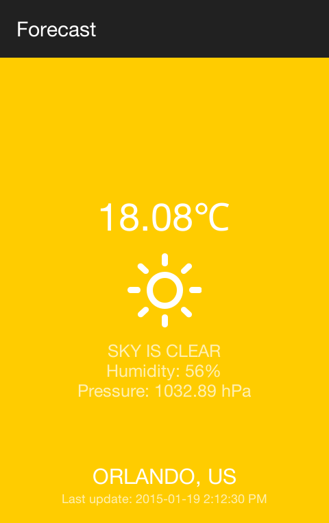
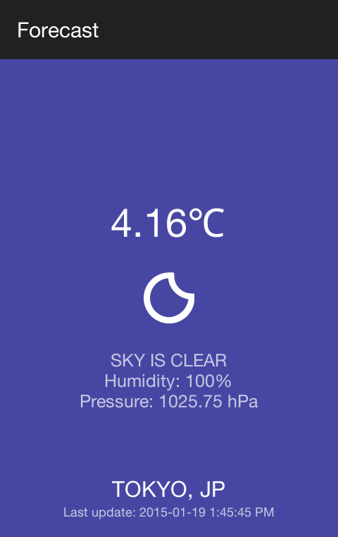
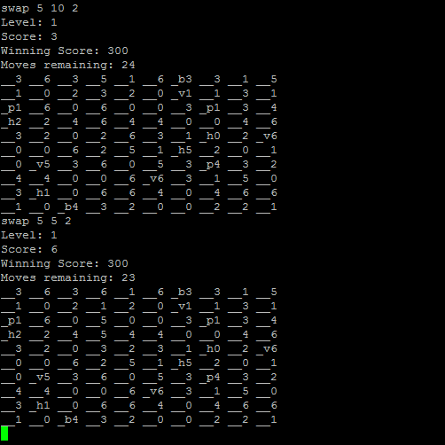
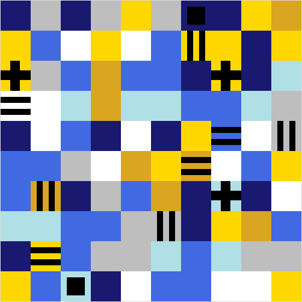

Forecast is a simple Android application which shows you the weather in your city of choice with a clean, minimalist interface. With bright background colours and detailed weather icons, it is easy to tell the weather at a glance. Using Open Map Weather's API, the weather data is continuously updated. In addition, your most recent city will be saved as your preferred city, meaning the next time you open the app, it will automatically be set to that city.

Square Swapper 5000 is a game coded in C++, controlled through the UNIX command line with a graphical interface. The point of the game is to swap the squares and make matches of 3 or more, until you have enough points to reach the winning score. The game will automatically level up to the next level, which is a more difficult board. If you don't reach the winning score in the alotted moves, you'll lose and the game will end.
For further options, you can input commands when you first run the program, such as using -textonly to remove the graphical interface, -colourscheme to change the colours of the squares, and -startlevel n to begin the game at the specified level.